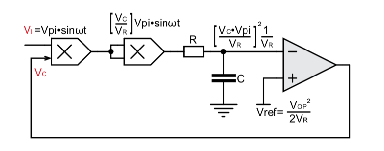
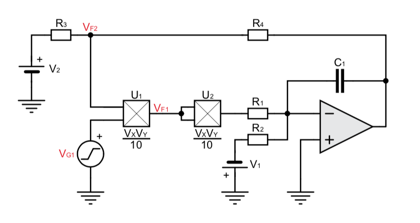
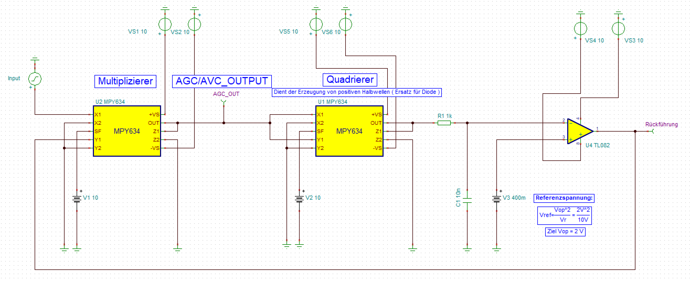
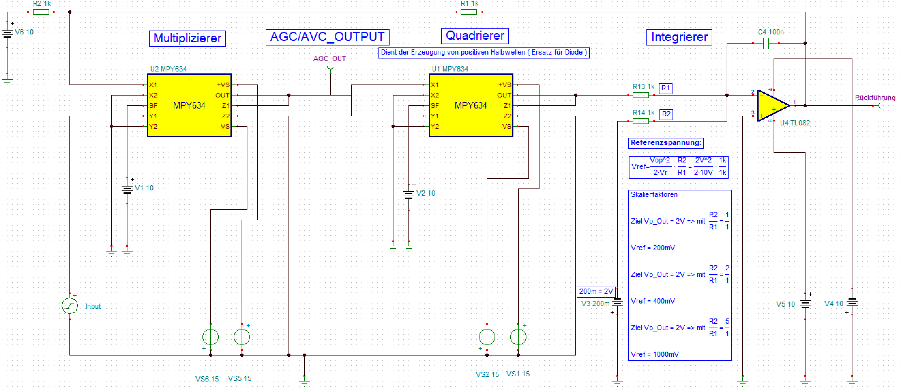
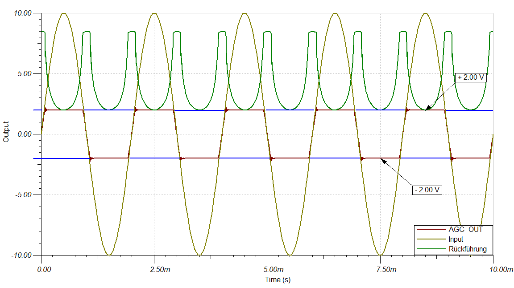
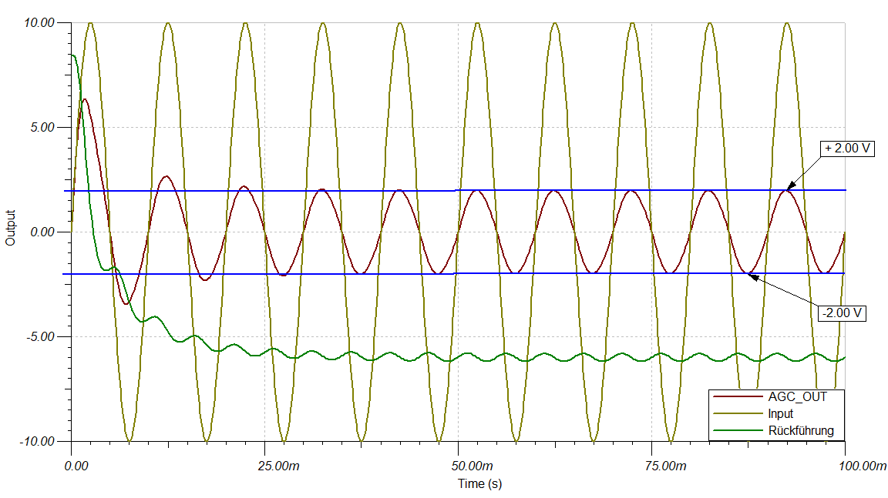
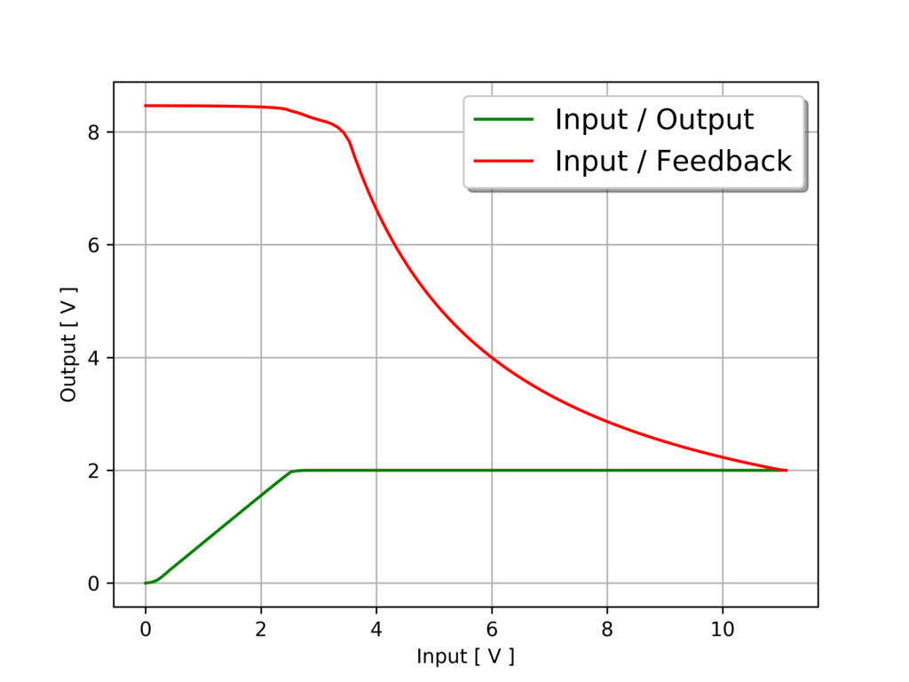
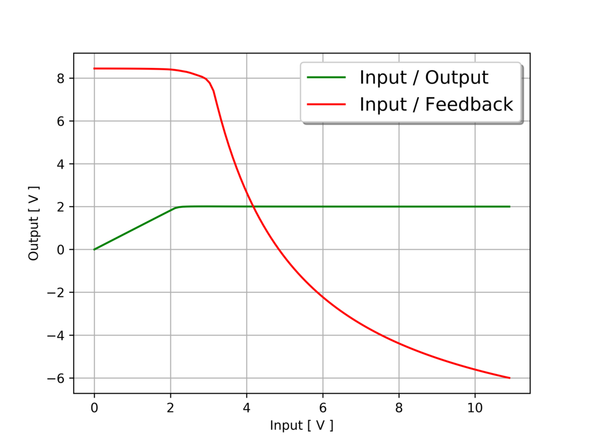
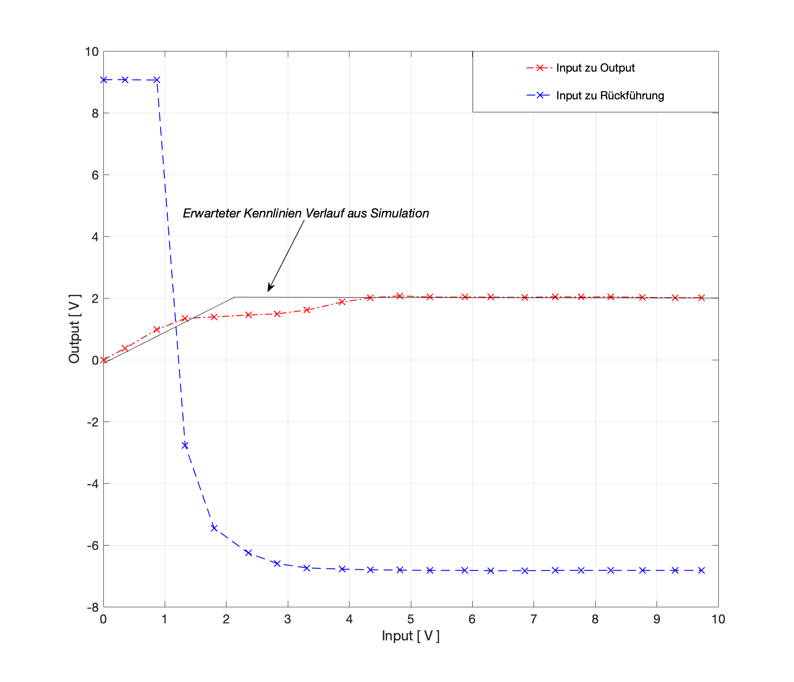

Automatic Gain/Volume Control (AGC/AVC)¶
Theorie und Motivation¶
AGC´s sind automatische Verstärkungsreglungen die in elektronischen Geräten dazu verwendet werden, dass ein Ausgangssignal bzw. ein Ausgangspegel unabhängig vom Eingangssignal unterhalb eines gesetzten Schwellpegels limitiert oder geregelt wird. Somit werden also über diese Schaltungen eingangsseitige Übersteuerungen oder aber starke Variationen der Eingangsamplitude mittels regelschleifen am Ausgang in Form einer Konstanten Amplitude mit gleicher Frequenz ausgeben. Für die Umsetzung solcher Regelschleifen sind unterschiedliche Herangehensweisen möglich. Beispielsweise lassen sich diese entweder über komplizierte Operations-Verstärkerschaltungen oder aber wie in diesem Experiment behandelt, mittels eines Comperator Soll- / Istwert-Vergleiches oder eines Integriergliedes in Verbindung mit Multiplikatoren realisieren.
Im ersten Teil des Experiments ist zunächst die allgemeine Regelschleife eines Comparators in Verbindung mit Multiplikatoren zu betrachten. Diese sollte zunächst analysiert und folgend hierauf ein Design mit Hilfe des Simulations Programms (LTspice oder Tina) entworfen werden, in dem eine Sinusspannung beliebiger Amplitude auf eine Ausgangsamplitude von 2V geregelt wird.
Nachdem dies erfolgt ist, soll das Systemverhalten (In- zu Output) im Bezug auf die Eingangsspannung dargestellt, die Eingangsspannung an der die Zielamplitude erreicht wird bestimmt und zuletzt die Ergebnisse der Simulation mit gemessenen Werten eines Schaltungsaufbaus verglichen werden.
Im zweiten Teil des Experiments soll nun eine Regelschleife mit Integrierglied betrachtet werden. Hierbei ist ebenso wie zuvor die Schaltung zunächst zu analysieren und folgend hierauf ein Design zu entwerfen, welches eine beliebige Eingangsamplitude in eine Ausgangsamplitude von 2V gleicher Frequenz regelt.
Ist dies ebenfalls erfolgt, so sind auch hierfür das Systemverhalten und die Schwellspannung der Zielamplitude zu bestimmen, sowie die Ergebnisse der Simulation mit den gemessen Werten eines Schaltungsaufbaus zu vergleichen.
Spezifikation¶
Schaltungsaufbau Comparator AGC¶
Der Comparator AGC besteht im Grunde aus vier Komponenten.
Multipizierer
Quadrierer
Tiefpass Filter
Comparator
Diese sind so mit einander verknüpft, dass das Eingangssignal zunächst in den Multiplizierer mit einer Rückführung des Comparators eingegeben wird. Dieses Ergebnis wird daraufhin an den Quadrierer übergeben, welcher das Sinussignal in Betrag setzt und somit zwei positive Halbwellen erzeugt. Folgend auf den Quadrierer wird das Signal noch in den Tiefpass-Filter eingegeben, in welchem es nochmal geglättet und somit in ein DC Signal überführt wird. Dieses DC Signal wird nun in den invertierenden Eingang des Comparators eingegeben und mit einer Referenzgleichspannung, welche am nicht invertierenden Eingang des Comparators eingegeben ist, verglichen. Das Ergebnis dieses Vergleiches zwischen Soll- und Ist-Wert sorgt nun durch seine Rückführung an den Multiplizierer für eine Skalierung des Eingangssignals. Sodass hierdurch das Eingangssignal am eingestellten Referenzwert regelt bzw. limitiert wird. Es ist hierbei der Ausgang des AGC´s am ersten Multiplizierer anzunehmen.
{#08_fig_01 .align-center}
Schaltungsaufbau Integrator AGC¶
Der Integrator AGC besteht aus fünf Komponenten. - Multiplizierer - Quadrierer - Schwellstromknoten - Integrierer - Rückführungs- Vorspannung
Das Prinzip des Integrators ist ähnlich dem des Comperators. Jedoch wird hier der Vergleich des Referenz-Sollwertes mit der zu regelnden Größe nicht mehr über einen Operationsverstärker, sondern mittels eines Schwellstroms realisiert. Die Umsetzung erfolgt hier über eine negativ vorgespannten Spannungsquelle am Knotenpunkt des invertierenden Eingangs des Operationsverstärkers. Diese bewirkt nun, dass wenn der Schwellstrom überschritten wurde, dass der Kondensator des Integrierers geladen und somit ein herabsetzen (Reglung) über die Rückführung des Integrierers hervorgerufen wird. Außerdem fällt hier der Tiefpassfilter weg, da dieser im Integrierer implementiert ist. Zuletzt erweitert sich die Schaltung noch um eine positiv Vorgespannte Spannungsquelle an der Rückführtung des Integrators. Diese bewirkt in Summe mit der negativ aufintegrierten Übersteuerung in der Rückführung, dass der Skalierfaktor SF des Multiplizierers das Eingangssignal mit jeder Periode herabsetzt, bis zuletzt im ausgeregelten Zustand eine konstante Rückführung die Regelgröße in den eingestellten Zielbereich regelt.
{#08_fig_02 .align-center}
Simulation des AGC¶
Zur Implementierung der zu verwendenden Komponenten in die Simulation, mussten zunächst für eine realitätsnahe Abbildung im Simulationsprogramm Tina die passenden Makro Modelle für den Multiplizierer MPY634 und den Operationsverstärker TL082 eingebunden werden. Für den TL082 ließen sich diese relativ schnell finden, für den Multiplizier jedoch nicht. Nach einigen Recherchen zeigte sich, das weder TI.com noch andre Hersteller dieses Bauteil in Form einer Libary oder eines Makros zur Verfügung stellen. Jedoch ließ sich nach längerem Durchforsten von Foren für den MPY634 ein Makro-Eignenbau auf Basis dessen Datenbattes finden und implementieren.
Es folgt der implementierte Multiplizierer (MPY634) folgender Gleichung:
$$ V_{out} = A \cdot \frac{(X1-X2)(Y1-Y2)}{SF}(Z1-Z2) $${=latex html}
Tina Schaltbilder Comperator und Integrator AGC¶
Nachdem sämtliche Komponenten eingebunden und mit einander verschaltet wurden, ließ sich folgende Schaltbilder für den Comperator und Integrator AGC erstellen.
{#08_fig_03 .align-center}
{#08_fig_04 .align-center}
Messkurven und Kennlinien aus Simulation¶
{#08_fig_05 .align-center}
{#08_fig_06 .align-center}
Es zeigt sich nun aus den Messungen der beiden AGC Schaltungen, dass im Falle des Comparators die Ausgangsspannung auf den eingestellten Bereich limitiert wird, wohingegen die Ausgangsspannung des Integrators nicht limitiert sondern Stück für Stück herabgesetzt wird. Es bleibt somit im Falle des Integrator AGC’s die Sinuswelle erhalten.
{#08_fig_07 .align-center}
{#08_fig_08 .align-center}
Aus der Kennlinie des Comparator AGC`s ist nun das erwartete Ein- zu Ausgangsverhalten eines AGC´s zu erkennbar. Diese zeigt, dass mit steigender Eingangsspannung die entworfene Regelschleife ab 2,50 V die Ausgangsspannung konstant bei 2,00 V limitiert. Die Kennlinie des Integrator AGC´s zeigt nun zusätzlich typisches Verhalten einer Regelstrecke. Beispielsweise ist zu erkennen das der Ausgang ebenso wie zuvor zunächst dem Eingang bis zu einem Schwellwert (hier 2.00 V) folgt, jedoch dann übergeht in ein Reglertypischen Überschwinger mit folgender Ausreglung auf einen eingestellten Ausgangszielwert. (hier 1,45 V)
Messung¶
Folgend sollten die gewonnenen Erkenntnisse aus der Simulation mit Messwerten des Integrator AGC´s verglichen, und die Funktion dieser Schaltung verifiziert werden. Hierfür wurde die Schaltung entsprechend der Schematik des Simulationsprogramms Tina aufgebaut, ein Referenzzielwert der Ausgangsspannung von 3,00 V eingestellt, und folgend hierauf die Schaltung für unterschiedliche Eingangsamplituden betrachtet.
html
{#08_fig_09
.align-center}
latex
{#08_fig_09
.align-center}
Dabei zeigt sich aus den Darstellungen, dass trotz der sich ändernden Amplitude der Eingangsspannung (blau) sich die Ausgangsspannung (magenta) konstant im Bereich der eingestellten Zielamplitude von 3,00 V aufhält. Wodurch also gezeigt ist, dass eine einstellbare Reglung der Eingangsspannung über die Schaltung des Integrator AGC´s im vollen Umfang gegeben ist.
html
{#08_fig_10
.align-center}
latex
{#08_fig_10
.align-center}
Eine Änderung der Referenzspannung zeigt ebenfalls in allen Fällen gleiches Regelverhalten mit einer konstanten Sinus Ausgangs-Zielamplitude.
Betrachtet mann nun auch die charakteristische Kennlinine des Integrator AGC’s, so zeichnet sich hieraus ebenfalls das typische Reglerverhalten des Integrierers aus der Rückführung der Regelschleife heraus.
{#08_fig_11 .align-center}
Diese bewirkt nun, dass die Ausgangsspannung mit einer höher werdenden Eingangsspannung ab einem Schwellwert von 1,40 V zunächst einbricht und daraufhin nach einer stückweisen Annährung in eine Konstante Ausgangsspannung von 2,00 V übergeht und somit ausgeregelt wird.
Fazit¶
Es lässt sich damit zeigen, das sich der Comparator oder Integrator AGC gleichermaßen gut für eine Reglung eines Eingangsignals in einen gewünschten Zielbereich eignet. Jedoch muss für die Anwendung bei der Auswahl des AGC`s abgewogen werden, ob der Wert in einer hohe Regelzeit-Performance oder aber in einem Erhalt der eingegebenen Sinusamplitude liegt.